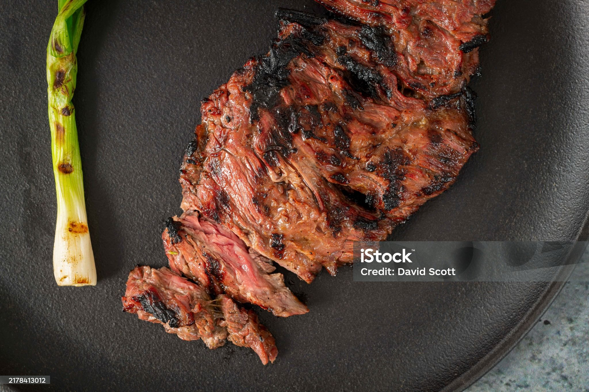

Vacio

Description
A grilled vacío is a flavorful cut of beef cooked slowly over hot embers on a simple metal grill.
The method creates a smoky, crispy crust while keeping the meat tender and juicy, highlighting its natural taste with minimal seasoning.
Ingredients
- Vacío cut of beef (flank/skirt steak)
- Coarse salt (like sea salt or kosher salt)
- Optional: black pepper or chimichurri sauce for serving
Steps
- Prepare the grill: Light the charcoal or wood and let it burn until you have hot embers.
- Season the meat: Sprinkle coarse salt evenly on both sides of the vacío.
- Place on grill: Lay the meat on the grill over indirect heat (not directly on flames) with the fat side up.
- Cook slowly: Grill for about 1 to 1.5 hours, turning occasionally, until the fat is crispy and the meat is tender.
- Rest and serve: Let the meat rest a few minutes, then slice against the grain and serve, optionally with chimichurri.
Home